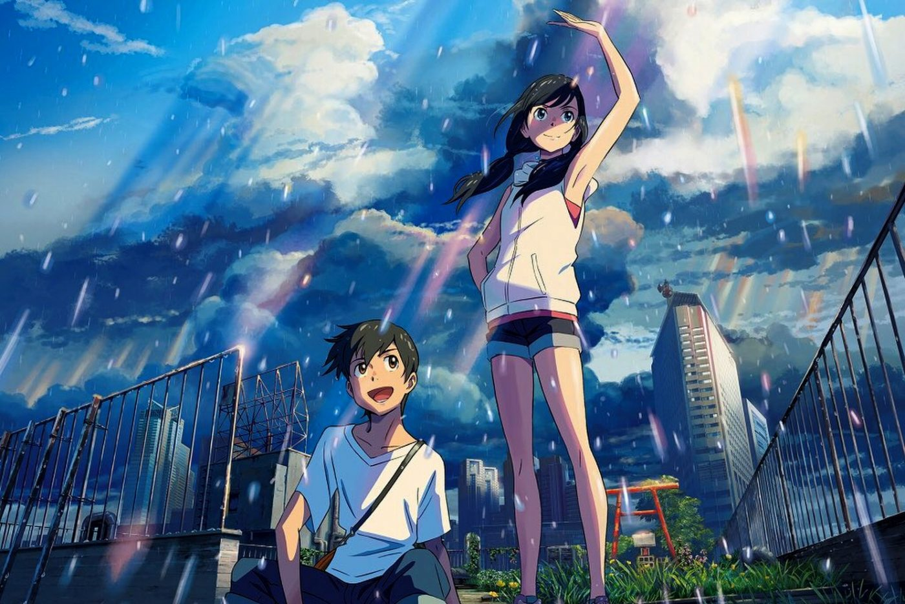
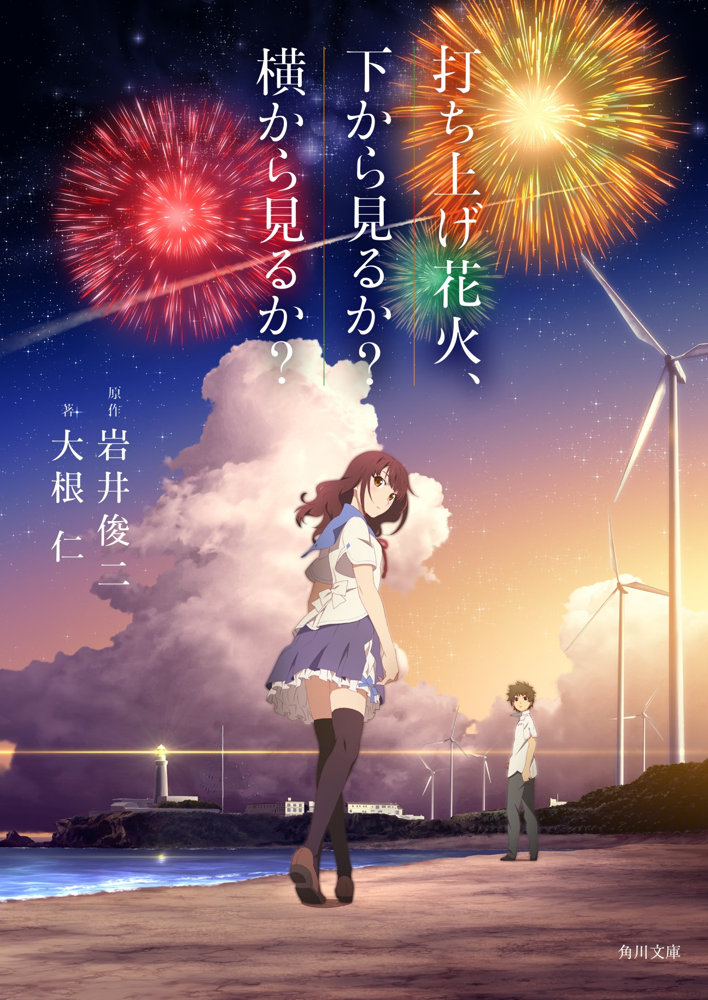
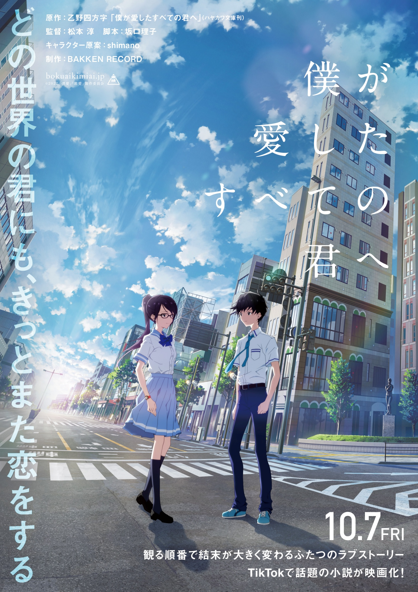
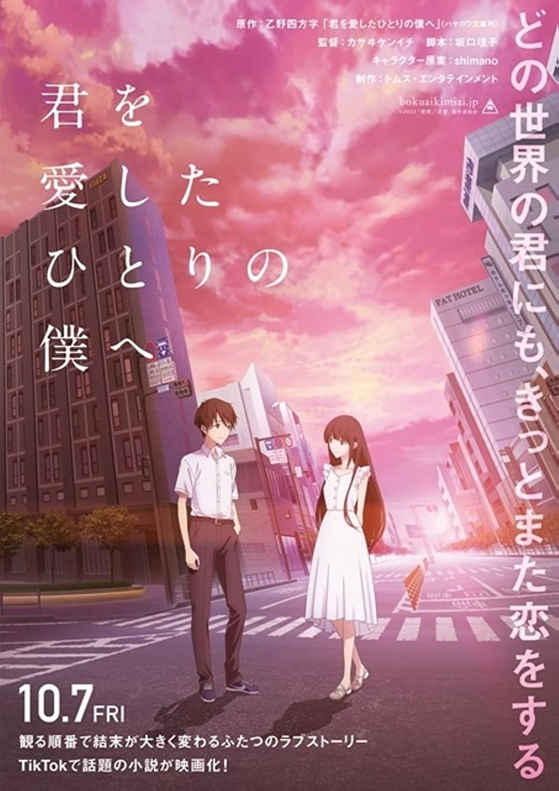

My Top 5 Favorite Movies
- Kimi no Na wa (Your Name)

- Year Released: 2016
- Main Actors: Ryunosuke Kamiki, Mone Kamishiraishi
- Brief Description: This animated romantic fantasy film directed by Makoto Shinkai follows the story of two high school students, Taki and Mitsuha, who mysteriously begin to swap bodies. As they navigate each other’s lives, they form a deep connection and work together to prevent a disaster from occurring in Mitsuha’s town.
- Tenki no Ko (Weathering with You)
- 
- Year Released: 2019
- Main Actors: Kotaro Daigo, Nana Mori
- Brief Description: Directed by Makoto Shinkai, this film tells the story of Hodaka, a high school boy who runs away to Tokyo and meets Hina, a girl who can control the weather. Together, they navigate the challenges of their newfound abilities and the impact it has on their lives and the world around them.
- Uchiage Hanabi, Shita kara Miru ka? Yoko kara Miru ka? (Fireworks, Should We See It from the Side or the Bottom?)
- 
- Year Released: 2017
- Main Actors: Suzu Hirose, Masaki Suda
- Brief Description: This animated romance film, directed by Akiyuki Shinbo and Nobuyuki Takeuchi, revolves around two high school students, Norimichi and Nazuna, who discover a mysterious orb that allows them to travel back in time. As they relive moments, they explore the possibilities of their relationship and the nature of their reality.
- Boku ga Aishita Subete no Kimi e (To All of You That I Loved)
- 
- Year Released: 2022
- Main Actors: Hio Miyazawa, Ai Hashimoto
- Brief Description: This science fiction romance film, directed by Jun Matsumoto, follows Koyomi Takasaki, who meets Kazune Takigawa, a girl who claims to be his girlfriend from a parallel world. Together, they navigate the complexities of their intertwined realities and the choices that shape their lives.
- Kimi wo Aishita Hitori no Boku e (To the Only Me Who Loved You)
- 
- Year Released: 2022
- Main Actors: Hio Miyazawa, Aju Makita
- Brief Description: Directed by Kenichi Kasai, this film tells the story of Koyomi Hidaka and Shiori Sato, who fall in love but face the challenge of their parents’ remarriage. They decide to elope to a parallel world where they are not stepsiblings, exploring the possibilities of their love across different realities.